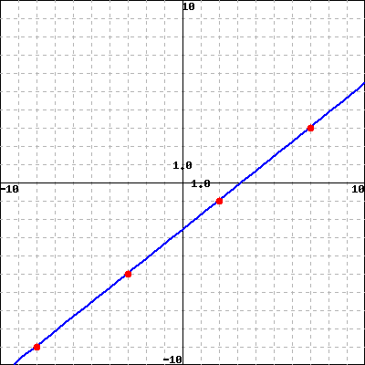

Section 1.8 The tangent line approximation
Subsection 1.8.1 Foundations
To be able to find the equation of a tangent line, you must know how to find the equation of a line given a point and a slope. Here are some practice exercises for this foundational skill.
Foundational Exercise 1.8.1.2.
Foundational Exercise 1.8.1.3.
Foundational Exercise 1.8.1.4.
Foundational Exercise 1.8.1.5.
Foundational Exercise 1.8.1.6.
Find an equation for the line graphed below:

Foundational Exercise 1.8.1.7.
Foundational Exercise 1.8.1.8.
Exercises 1.8.2 Additional Practice
1.
| \(x\) | \(f{\small(x)}\) | \(f'{\small(x)}\) |
|---|---|---|
| \(1\) | \(3\) | \(4\) |
| \(2\) | \(1\) | \(3\) |
| \(3\) | \(4\) | \(2\) |
| \(4\) | \(2\) | \(1\) |
Give formulas for the following tangent lines at \(x=3\text{.}\)
\(\quad y =\)
\(\quad y =\)
\(\quad y =\)
\(\quad y =\)
2.
3.
\(\quad y =\)
B. \(\quad\) Estimate the following values.
\(\quad \displaystyle f\left(3\right) \approx\)
\(\quad \displaystyle f\left({\frac{1}{2}}\right) \approx\)